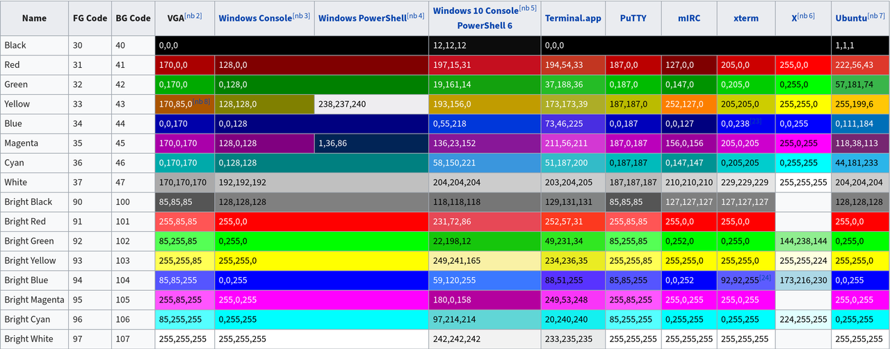
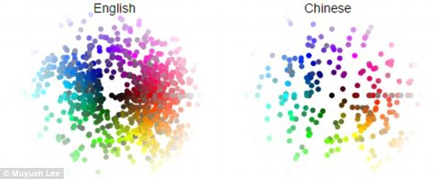
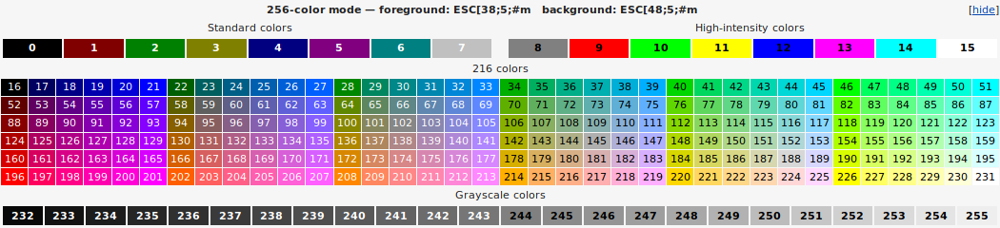
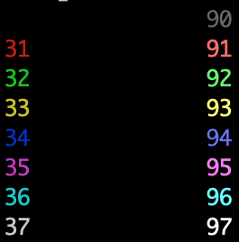

On most terminals it is possible to colorize output using the \033 ANSI
escape sequence.
I'm looking for a list of all supported colors and options (like bright and
blinking).
As there are probably differences between the terminals supporting them, I'm
mainly interested in sequences supported by xterm-compatible terminals.
Answer
The ANSI escape sequences you're looking for are the Select Graphic Rendition
subset. All of these have the form
where XXX is a series of semicolon-separated parameters.
To say, make text red, bold, and underlined (we'll discuss many other options
below) in C you might write:
printf("\033[31;1;4mHello\033[0m");
In C++ you'd use
std::cout<<"\033[31;1;4mHello\033[0m";
In Python3 you'd use
print("\033[31;1;4mHello\033[0m")
and in Bash you'd use
echo -e "\033[31;1;4mHello\033[0m"
where the first part makes the text red (31), bold (1), underlined (4)
and the last part clears all this (0).
As described in the table below, there are a large number of text properties
you can set, such as boldness, font, underlining, &c.
Font Effects
| Code |
Effect |
Note |
| 0 |
Reset / Normal |
all attributes off |
| 1 |
Bold or increased intensity |
|
| 2 |
Faint (decreased intensity) |
Not widely supported. |
| 3 |
Italic |
Not widely supported. Sometimes treated as inverse. |
| 4 |
Underline |
|
| 5 |
Slow Blink |
less than 150 per minute |
| 6 |
Rapid Blink |
MS-DOS ANSI.SYS; 150+ per minute; not widely supported |
| 7 |
[[reverse video]] |
swap foreground and background colors |
| 8 |
Conceal |
Not widely supported. |
| 9 |
Crossed-out |
Characters legible, but marked for deletion. Not widely |
| supported. |
|
|
| 10 |
Primary(default) font |
|
| 11–19 |
Alternate font |
Select alternate font n-10
|
| 20 |
Fraktur |
hardly ever supported |
| 21 |
Bold off or Double Underline |
Bold off not widely supported; double |
| underline hardly ever supported. |
|
|
| 22 |
Normal color or intensity |
Neither bold nor faint |
| 23 |
Not italic, not Fraktur |
|
| 24 |
Underline off |
Not singly or doubly underlined |
| 25 |
Blink off |
|
| 27 |
Inverse off |
|
| 28 |
Reveal |
conceal off |
| 29 |
Not crossed out |
|
| 30–37 |
Set foreground color |
See color table below |
| 38 |
Set foreground color |
Next arguments are 5;<n> or 2;<r>;<g>;<b>, see |
| below |
|
|
| 39 |
Default foreground color |
implementation defined (according to standard) |
| 40–47 |
Set background color |
See color table below |
| 48 |
Set background color |
Next arguments are 5;<n> or 2;<r>;<g>;<b>, see |
| below |
|
|
| 49 |
Default background color |
implementation defined (according to standard) |
| 51 |
Framed |
|
| 52 |
Encircled |
|
| 53 |
Overlined |
|
| 54 |
Not framed or encircled |
|
| 55 |
Not overlined |
|
| 60 |
ideogram underline |
hardly ever supported |
| 61 |
ideogram double underline |
hardly ever supported |
| 62 |
ideogram overline |
hardly ever supported |
| 63 |
ideogram double overline |
hardly ever supported |
| 64 |
ideogram stress marking |
hardly ever supported |
| 65 |
ideogram attributes off |
reset the effects of all of 60-64 |
| 90–97 |
Set bright foreground color |
aixterm (not in standard) |
| 100–107 |
Set bright background color |
aixterm (not in standard) |
2-bit Colours
You've got this already!
4-bit Colours
The standards implementing terminal colours began with limited (4-bit)
options. The table below lists the RGB values of the background and foreground
colours used for these by a variety of terminal emulators:

Using the above, you can make red text on a green background (but why?) using:
11 Colours (An Interlude)
In their book "Basic Color Terms: Their Universality and Evolution", Brent
Berlin and Paul Kay used data collected from twenty different languages from a
range of language families to identify eleven possible basic color categories:
white, black, red, green, yellow, blue, brown, purple, pink, orange, and gray.
Berlin and Kay found that, in languages with fewer than the maximum eleven
color categories, the colors followed a specific evolutionary pattern. This
pattern is as follows:
- All languages contain terms for black (cool colours) and white (bright colours).
- If a language contains three terms, then it contains a term for red.
- If a language contains four terms, then it contains a term for either green or yellow (but not both).
- If a language contains five terms, then it contains terms for both green and yellow.
- If a language contains six terms, then it contains a term for blue.
- If a language contains seven terms, then it contains a term for brown.
- If a language contains eight or more terms, then it contains terms for purple, pink, orange or gray.
This may be why story Beowulf only contains the colours black, white, and
red. It may also be why the Bible does not contain the colour blue. Homer's
Odyssey contains black almost 200 times and white about 100 times. Red
appears 15 times, while yellow and green appear only 10 times. (More
information here)
Differences between languages are also interesting: note the profusion of
distinct colour words used by English vs. Chinese. However, digging deeper
into these languages shows that each uses colour in distinct ways. (More
information)

Generally speaking, the naming, use, and grouping of colours in human
languages is fascinating. Now, back to the show.
8-bit (256) colours
Technology advanced, and tables of 256 pre-selected colours became available,
as shown below.

Using these above, you can make pink text like so:
\033[38;5;206m #That is, \033[38;5;<FG COLOR>m
And make an early-morning blue background using
\033[48;5;57m #That is, \033[48;5;<BG COLOR>m
And, of course, you can combine these:
The 8-bit colours are arranged like so:
0x00-0x07: standard colors (same as the 4-bit colours)
0x08-0x0F: high intensity colors
0x10-0xE7: 6 × 6 × 6 cube (216 colors): 16 + 36 × r + 6 × g + b (0 ≤ r, g, b ≤ 5)
0xE8-0xFF: grayscale from black to white in 24 steps
ALL THE COLOURS
Now we are living in the future, and the full RGB spectrum is available using:
\033[38;2;<r>;<g>;<b>m #Select RGB foreground color
\033[48;2;<r>;<g>;<b>m #Select RGB background color
So you can put pinkish text on a brownish background using
\033[38;2;255;82;197;48;2;155;106;0mHello
Support for "true color" terminals is listed here.
Much of the above is drawn from the Wikipedia page "ANSI escape code".
A Handy Script to Remind Yourself
Since I'm often in the position of trying to remember what colours are what, I
have a handy script called: ~/bin/ansi_colours:
|
#!/usr/bin/python
|
|
|
|
print "\\033[XXm"
|
|
|
|
for i in range(30,37+1):
|
|
print "\033[%dm%d\t\t\033[%dm%d" % (i,i,i+60,i+60);
|
|
|
|
print "\033[39m\\033[49m - Reset colour"
|
|
print "\\033[2K - Clear Line"
|
|
print "\\033[<L>;<C>H OR \\033[<L>;<C>f puts the cursor at line L and column C."
|
|
print "\\033[<N>A Move the cursor up N lines"
|
|
print "\\033[<N>B Move the cursor down N lines"
|
|
print "\\033[<N>C Move the cursor forward N columns"
|
|
print "\\033[<N>D Move the cursor backward N columns"
|
|
print "\\033[2J Clear the screen, move to (0,0)"
|
|
print "\\033[K Erase to end of line"
|
|
print "\\033[s Save cursor position"
|
|
print "\\033[u Restore cursor position"
|
|
print " "
|
|
print "\\033[4m Underline on"
|
|
print "\\033[24m Underline off"
|
|
print "\\033[1m Bold on"
|
|
print "\\033[21m Bold off"
|
This prints

Suggest
How about:
ECMA-48 - Control Functions for Coded Character Sets, 5th edition (June 1991)
- A standard defining the color control codes, that is apparently supported
also by xterm.
SGR 38 and 48 were originally reserved by ECMA-48, but were fleshed out a few
years later in a joint ITU, IEC, and ISO standard, which comes in several
parts and which (amongst a whole lot of other things) documents the SGR 38/48
control sequences for direct colour and indexed colour :
-
Information technology — Open Document Architecture (ODA) and interchange format: Document structures. T.412. International Telecommunication Union.
-
Information technology — Open Document Architecture (ODA) and interchange format: Character content architectures. T.416. International Telecommunication Union.
-
Information technology— Open Document Architecture (ODA) and Interchange Format: Character content architectures. ISO/IEC 8613-6:1994. International Organization for Standardization.
There's a column for xterm in this table on the Wikipedia page for ANSI escape
codes